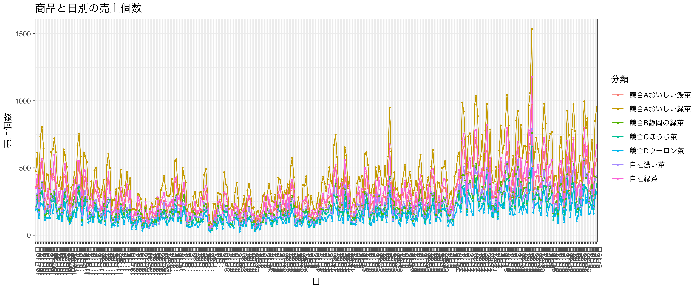
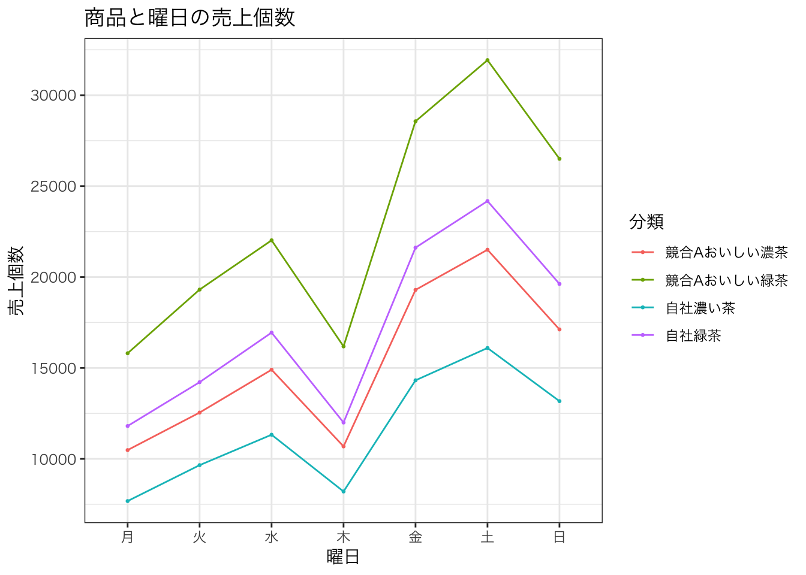

pacman::p_load(tidyverse, readxl, ggthemes, gt, gtExtras)3 第3回 売上の時系列データ分析
3.1 はじめに
パッケージとデータを準備する。
第3回ファイルで使うデータはchp3.xlsxです。
chp3.xlsx
パッケージを読み込みます。
「いつものPOSデータ」を読み込みます。 ついでに文字列をカテゴリー変数として因子型に変換しておきます。
df <- readxl::read_excel("data/chp3.xlsx")
df <- df %>%
mutate(曜日 = factor(曜日, levels = c("月", "火", "水", "木", "金", "土", "日"), ordered = TRUE),
性別 = factor(性別, levels = c("男性", "女性"), ordered = TRUE),
年代 = factor(年代, levels = c("20歳未満", "20代", "30代", "40代", "50代", "60歳以上"), ordered = TRUE),
メーカー = as.factor(メーカー),
商品名 = as.factor(商品名))
head(df) # 戦闘6行を表示# A tibble: 6 × 11
レシート番号 日付 曜日 時間 性別 年代 メーカー 商品名 単価
<chr> <dttm> <ord> <dbl> <ord> <ord> <fct> <fct> <dbl>
1 R000001 2023-01-02 00:00:00 月 10 女性 30代 競合A おい… 160
2 R000001 2023-01-02 00:00:00 月 10 女性 30代 競合B 静岡… 170
3 R000002 2023-01-02 00:00:00 月 10 男性 60歳… 競合B 静岡… 170
4 R000002 2023-01-02 00:00:00 月 10 男性 60歳… 競合A おい… 160
5 R000003 2023-01-02 00:00:00 月 10 男性 50代 競合C ほう… 140
6 R000004 2023-01-02 00:00:00 月 10 女性 50代 競合D ウー… 140
# ℹ 2 more variables: 個数 <dbl>, 金額 <dbl>3.2 商品と月ごとの売上個数
df <- df |>
mutate(
分類 = paste0(メーカー, 商品名),
月 = lubridate::month(日付),
月 = factor(月, levels = unique(月)),
月日 = paste0(month(日付), "月", day(日付), "日"),
)
df_month_item <- df |>
group_by(分類, 月) |>
summarise(売上個数 = sum(個数))`summarise()` has grouped output by '分類'. You can override using the
`.groups` argument.df_month_item |>
pivot_wider(names_from = 分類, values_from = 売上個数) |>
gt()|>
fmt_number(columns = 2:8, decimals = 0)| 月 | 競合Aおいしい濃茶 | 競合Aおいしい緑茶 | 競合B静岡の緑茶 | 競合Cほうじ茶 | 競合Dウーロン茶 | 自社濃い茶 | 自社緑茶 |
|---|---|---|---|---|---|---|---|
| 1 | 5,569 | 8,344 | 4,264 | 3,397 | 2,740 | 4,183 | 6,332 |
| 2 | 4,881 | 7,119 | 3,528 | 2,892 | 2,409 | 3,535 | 5,251 |
| 3 | 6,447 | 9,776 | 4,928 | 4,005 | 3,264 | 4,719 | 7,343 |
| 4 | 7,753 | 11,761 | 5,854 | 5,009 | 3,849 | 6,032 | 8,893 |
| 5 | 8,987 | 13,588 | 6,428 | 5,571 | 4,526 | 6,601 | 10,106 |
| 6 | 8,158 | 12,072 | 6,319 | 4,989 | 4,086 | 6,058 | 9,199 |
| 7 | 13,690 | 20,222 | 10,119 | 8,583 | 6,890 | 10,407 | 15,222 |
| 8 | 14,509 | 22,650 | 11,207 | 9,291 | 7,315 | 11,348 | 16,865 |
| 9 | 12,366 | 19,143 | 9,663 | 7,941 | 6,310 | 9,769 | 14,228 |
| 10 | 10,353 | 15,540 | 7,273 | 6,339 | 5,083 | 7,666 | 11,589 |
| 11 | 7,754 | 11,427 | 5,514 | 4,742 | 3,985 | 5,680 | 8,592 |
| 12 | 6,063 | 8,675 | 4,535 | 3,596 | 3,015 | 4,462 | 6,761 |
df_month_item |>
ggplot(aes(x = 月, y = 売上個数, group = 分類, color = 分類)) +
geom_line() +
geom_point() +
theme(legend.position = "top") +
labs(title = "商品と月ごとの売上個数",
x = "月", y = "売上個数") +
theme_bw(base_family = "HiraKakuPro-W3") +
scale_fill_tableau(name = "Tableau 20")
個人的に気に入っているグラフの描き方です。
df_name <- df_month_item |> filter(月 == 12) # 12月のデータを抽出
g <- df_month_item |>
ggplot(aes(x = 月, y = 売上個数, group = 分類, color = 分類)) +
geom_line() + geom_point() + # 線と点を描く
labs(title = "商品と月ごとの売上個数", x = "月", y = "売上個数") +
theme_bw(base_family = "HiraKakuPro-W3") +
scale_fill_tableau(name = "Tableau 20") +
scale_x_discrete(breaks = 1:12, expand = expansion(mult = c(0, .20))) # x軸の範囲を拡大
g <- g + geom_text(data = df_name, aes(x = 月, y = 売上個数, label = 分類), adj = 0, size = 4, nudge_x = 0.2,family = "HiraKakuProN-W3")
g
3.3 日別の売上個数
df_md_item <- df |>
group_by(分類, 月日) |>
summarise(売上個数 = sum(個数)) |>
ungroup()`summarise()` has grouped output by '分類'. You can override using the
`.groups` argument.df_md_item |>
pivot_wider(names_from = 分類, values_from = 売上個数) |>
head(10) |>
gt()|>
fmt_number(columns = 2:8, decimals = 0)| 月日 | 競合Aおいしい濃茶 | 競合Aおいしい緑茶 | 競合B静岡の緑茶 | 競合Cほうじ茶 | 競合Dウーロン茶 | 自社濃い茶 | 自社緑茶 |
|---|---|---|---|---|---|---|---|
| 10月10日 | 361 | 475 | 206 | 191 | 189 | 205 | 351 |
| 10月11日 | 374 | 613 | 295 | 264 | 194 | 352 | 449 |
| 10月12日 | 253 | 348 | 185 | 168 | 125 | 168 | 273 |
| 10月13日 | 462 | 737 | 312 | 283 | 239 | 330 | 532 |
| 10月14日 | 544 | 804 | 392 | 326 | 229 | 399 | 570 |
| 10月15日 | 395 | 647 | 274 | 245 | 213 | 279 | 434 |
| 10月16日 | 196 | 327 | 147 | 130 | 111 | 170 | 261 |
| 10月17日 | 238 | 455 | 160 | 185 | 126 | 194 | 295 |
| 10月18日 | 324 | 449 | 225 | 178 | 130 | 217 | 347 |
| 10月19日 | 210 | 341 | 163 | 127 | 125 | 165 | 225 |
df_md_item |>
ggplot(aes(x = 月日, y = 売上個数, group = 分類, color = 分類)) +
geom_line(linewidth = 0.5) +
geom_point(size = .5) +
labs(title = "商品と日別の売上個数",
x = "日", y = "売上個数") +
# ラベルを縦にする。
theme_bw(base_family = "HiraKakuPro-W3") +
theme(axis.text.x = element_text(angle = 90, hjust = 1)) +
scale_fill_tableau(name = "Tableau 20")
df |>
filter(月 == 1) |>
filter(分類 %in% c("競合Aおいしい濃茶", "競合Aおいしい緑茶", "自社濃い茶", "自社緑茶")) |>
group_by(分類, 月日) |>
summarise(売上個数 = sum(個数)) |>
ggplot(aes(x = 月日, y = 売上個数, group = 分類, color = 分類)) +
geom_line(linewidth = 0.5) +
geom_point(size = .5) +
labs(title = "商品と日別の売上個数",
x = "日", y = "売上個数") +
# ラベルを縦にする。
theme_bw(base_family = "HiraKakuPro-W3") +
theme(axis.text.x = element_text(angle = 90, hjust = 1)) +
scale_fill_tableau(name = "Tableau 20")`summarise()` has grouped output by '分類'. You can override using the
`.groups` argument.
df |>
filter(分類 %in% c("競合Aおいしい濃茶", "競合Aおいしい緑茶", "自社濃い茶", "自社緑茶")) |>
group_by(分類, 曜日) |>
summarise(売上個数 = sum(個数)) |>
ggplot(aes(x = 曜日, y = 売上個数, group = 分類, color = 分類)) +
geom_line(linewidth = 0.5) +
geom_point(size = .5) +
labs(title = "商品と曜日の売上個数",
x = "曜日", y = "売上個数") +
# ラベルを縦にする。
theme_bw(base_family = "HiraKakuPro-W3") +
scale_fill_tableau(name = "Tableau 20")`summarise()` has grouped output by '分類'. You can override using the
`.groups` argument.
3.4 移動平均
移動平均を計算するためには、zooパッケージを使います。
pacman::p_load(zoo)
df_mv_item <- df_md_item |>
filter(分類 %in% c("競合Aおいしい濃茶", "競合Aおいしい緑茶", "自社濃い茶", "自社緑茶")) |>
group_by(分類) |>
mutate(移動平均 = rollmean(売上個数, align = "right", k = 7, fill = NA)) |>
ungroup()
levels(df_mv_item$月日)NULLdf_mv_item |>
ggplot() + aes(x = 月日, y = 移動平均, group = 分類, color = 分類) +
geom_line(linewidth = 0.5) + geom_point(size = .5) +
labs(title = "の売上個数の7日移動平均",
x = "基準日", y = "売上個数") +
theme_bw(base_family = "HiraKakuPro-W3") +
theme(axis.text.x = element_text(angle = 90, hjust = 1, size = 6)) +
scale_fill_tableau(name = "Tableau 20")